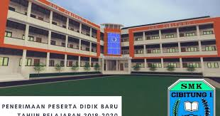

🏫 Lantai 1 — SMK CIBITUNG 1
Lantai pertama merupakan pusat aktivitas siswa dan staf. Area ini mencakup ruang praktik jurusan, area administrasi, hingga ruang publik. Di ujung kiri terdapat tangga menuju lantai atas, dan di sepanjang koridor utama terdapat ruang-ruang penting seperti bank mini, lobi, dan laboratorium komputer.
🧱
Tangga Ujung Kiri
Tangga ini menghubungkan lantai 1 ke lantai 2. Letaknya di sisi kiri paling ujung bangunan.
🛠️
Ruang Jurusan Teknik Motor
Dua ruangan praktik untuk jurusan Teknik Motor (TM). Dilengkapi dengan mesin, alat servis, dan area simulasi bengkel.
🏦
Bank Mini
Tempat administrasi keuangan sekolah, pendaftaran siswa, dan pembayaran SPP. Sering digunakan juga untuk simulasi praktik jurusan Akl.
🛎️
Lobi Utama
Area tengah lantai satu, berisi meja piket, CCTV, dan tangga ke lantai dua. Juga terdapat akses ke toilet umum.
💻
Lab Komputer SIJA 1
Laboratorium ber-AC (4–5 unit) berisi komputer, monitor, keyboard, dan mouse untuk kegiatan praktik jurusan SIJA.
🖥️
Lab Komputer SIJA 2
Ruangan serupa dengan Lab SIJA 1, digunakan untuk pembelajaran tambahan dan ujian praktik.
📚
Perpustakaan
Menyediakan berbagai koleksi buku pelajaran, referensi, dan komputer untuk pencarian data digital.
🪜
Tangga Tengah
Tangga tambahan yang juga menghubungkan lantai 1 ke lantai 2, terletak di area tengah dekat perpustakaan.
☕
Kantin Sekolah
Tempat favorit siswa untuk beristirahat dan makan siang. Tersedia berbagai menu dan tempat duduk yang nyaman.
🕌
Masjid
Tempat ibadah utama di sekolah, digunakan untuk salat berjamaah dan kegiatan rohani siswa.
🗺️ Denah Lantai 1
Berikut adalah denah visual lantai pertama sekolah:
